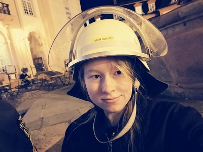
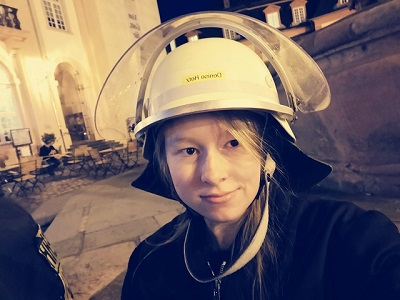

Über mich
Erfahren Sie mehr über mich und meine Arbeit
Überblick
Hallo! Ich bin Jacqueline Denise Hetz, 25 Jahre jung und im sechsten Semester meines Mediendesign-Studiums (Bachelor) an der IU Internationalen Hochschule.
Meine Leidenschaft gilt den Bereichen Fotografie, Kreativität, Design, Lesen und Games. In meiner Freizeit tauche ich gerne in Bücher ein, bin kreativ beim Zeichnen oder Erstellen von Designprojekten und verbringe Zeit mit meiner Nintendo Switch oder meinem Steam Deck. Schon während meiner Schulzeit habe ich mich für Webdesign interessiert und erste Erfahrungen mit HTML, CSS sowie Baukastensystemen wie Weebly und Jimdo gesammelt. Später entdeckte ich Content-Management-Systeme und begann, mit WordPress zu experimentieren.
Was mich am Designprozess begeistert?
Ich liebe es, den Fortschritt meiner Arbeit zu sehen und wie das Endergebnis mit meiner ursprünglichen Vision harmoniert. Der Designprozess ist iterativ – manchmal bedeutet das, noch einmal neu anzufangen, um das Beste herauszuholen. Genau das macht Design für mich spannend und herausfordernd. Privat habe ich viele kreative Ideen, die ich gerne in die Tat umsetzen möchte – sei es das Gestalten von Lesezeichen oder die Kreation von individuellem Merchandise. Design ist ein fortlaufender Prozess, und es ist absolut in Ordnung, eine Illustration neu zu beginnen. Wir leben in einer offenen, vielfältigen Welt, in der man kreativ und flexibel denken sollte – jenseits von Schwarz-Weiß-Denken.
Möchten Sie mehr über mich erfahren?
Ich lade Sie herzlich ein, durch meine Seite zu stöbern und sich meine bisherigen Arbeiten und Studienprojekte anzusehen. Für Fragen stehe ich Ihnen gerne zur Verfügung. Meine Kontaktdaten finden Sie im Impressum oder in meinen Bewerbungsunterlagen.
Eindrücke in meine Persönlichkeit
In diesem Abschnitt möchte ich Ihnen einen kleinen Einblick in meine Persönlichkeit geben – visuell und in Worten. Die Bilder im Slider zeigen einige Momente aus meinem Leben, die mich prägen und inspirieren. Sie spiegeln nicht nur meine Interessen und Hobbys wider, sondern auch, wie ich die Welt um mich herum wahrnehme. Ob es die Freude am kreativen Schaffen ist, meine Liebe zur Natur oder die Momente der Entspannung – jedes Bild erzählt eine eigene kleine Geschichte. Für mich ist Kreativität mehr als nur Arbeit; es ist ein wesentlicher Teil meines Alltags, der mich antreibt und erfüllt. Ich bin neugierig, immer offen für Neues und bereit, über den Tellerrand hinauszuschauen. Meine Bilder sollen das vermitteln – eine Person, die ihre Leidenschaften lebt, authentisch bleibt und gerne in die Welt des Designs und der Kunst eintaucht.


 
